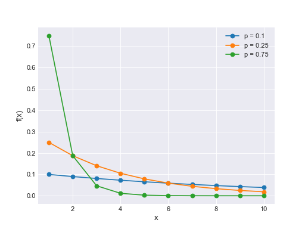

Discrete¶
Binomial(n, p, *args, **kwargs) |
Binomial log-likelihood. |
ZeroInflatedBinomial(psi, n, p, *args, **kwargs) |
Zero-inflated Binomial log-likelihood. |
BetaBinomial(alpha, beta, n, *args, **kwargs) |
Beta-binomial log-likelihood. |
Bernoulli([p, logit_p]) |
Bernoulli log-likelihood |
Poisson(mu, *args, **kwargs) |
Poisson log-likelihood. |
ZeroInflatedPoisson(psi, theta, *args, **kwargs) |
Zero-inflated Poisson log-likelihood. |
NegativeBinomial(mu, alpha, *args, **kwargs) |
Negative binomial log-likelihood. |
ZeroInflatedNegativeBinomial(psi, mu, alpha, …) |
Zero-Inflated Negative binomial log-likelihood. |
DiscreteUniform(lower, upper, *args, **kwargs) |
Discrete uniform distribution. |
Geometric(p, *args, **kwargs) |
Geometric log-likelihood. |
Categorical(p, *args, **kwargs) |
Categorical log-likelihood. |
DiscreteWeibull(q, beta, *args, **kwargs) |
Discrete Weibull log-likelihood |
Constant(c, *args, **kwargs) |
Constant log-likelihood. |
OrderedLogistic(eta, cutpoints, *args, **kwargs) |
Ordered Logistic log-likelihood. |
-
class
pymc3.distributions.discrete.Binomial(n, p, *args, **kwargs)¶ Binomial log-likelihood.
The discrete probability distribution of the number of successes in a sequence of n independent yes/no experiments, each of which yields success with probability p. The pmf of this distribution is
\[f(x \mid n, p) = \binom{n}{x} p^x (1-p)^{n-x}\](Source code, png, hires.png, pdf)

Support \(x \in \{0, 1, \ldots, n\}\) Mean \(n p\) Variance \(n p (1 - p)\) Parameters: n : int
Number of Bernoulli trials (n >= 0).
p : float
Probability of success in each trial (0 < p < 1).
{kind=link}
{kind=link}
-
class
pymc3.distributions.discrete.BetaBinomial(alpha, beta, n, *args, **kwargs)¶ Beta-binomial log-likelihood.
Equivalent to binomial random variable with success probability drawn from a beta distribution. The pmf of this distribution is
\[f(x \mid \alpha, \beta, n) = \binom{n}{x} \frac{B(x + \alpha, n - x + \beta)}{B(\alpha, \beta)}\](Source code, png, hires.png, pdf)

Support \(x \in \{0, 1, \ldots, n\}\) Mean \(n \dfrac{\alpha}{\alpha + \beta}\) Variance \(n \dfrac{\alpha \beta}{(\alpha+\beta)^2 (\alpha+\beta+1)}\) Parameters: n : int
Number of Bernoulli trials (n >= 0).
alpha : float
alpha > 0.
beta : float
beta > 0.
{kind=link}
{kind=link}
-
class
pymc3.distributions.discrete.Bernoulli(p=None, logit_p=None, *args, **kwargs)¶ Bernoulli log-likelihood
The Bernoulli distribution describes the probability of successes (x=1) and failures (x=0). The pmf of this distribution is
\[f(x \mid p) = p^{x} (1-p)^{1-x}\](Source code, png, hires.png, pdf)

Support \(x \in \{0, 1\}\) Mean \(p\) Variance \(p (1 - p)\) Parameters: p : float
Probability of success (0 < p < 1).
logit_p : float
Logit of success probability. Only one of p and logit_p can be specified.
{kind=link}
{kind=link}
-
class
pymc3.distributions.discrete.DiscreteWeibull(q, beta, *args, **kwargs)¶ Discrete Weibull log-likelihood
The discrete Weibull distribution is a flexible model of count data that can handle both over- and under-dispersion. The pmf of this distribution is
\[f(x \mid q, \beta) = q^{x^{\beta}} - q^{(x + 1)^{\beta}}\](Source code, png, hires.png, pdf)

Support \(x \in \mathbb{N}_0\) Mean \(\mu = \sum_{x = 1}^{\infty} q^{x^{\beta}}\) Variance \(2 \sum_{x = 1}^{\infty} x q^{x^{\beta}} - \mu - \mu^2\)
{kind=link}
{kind=link}
-
class
pymc3.distributions.discrete.Poisson(mu, *args, **kwargs)¶ Poisson log-likelihood.
Often used to model the number of events occurring in a fixed period of time when the times at which events occur are independent. The pmf of this distribution is
\[f(x \mid \mu) = \frac{e^{-\mu}\mu^x}{x!}\](Source code, png, hires.png, pdf)

Support \(x \in \mathbb{N}_0\) Mean \(\mu\) Variance \(\mu\) Parameters: mu : float
Expected number of occurrences during the given interval (mu >= 0).
Notes
The Poisson distribution can be derived as a limiting case of the binomial distribution.
{kind=link}
{kind=link}
-
class
pymc3.distributions.discrete.NegativeBinomial(mu, alpha, *args, **kwargs)¶ Negative binomial log-likelihood.
The negative binomial distribution describes a Poisson random variable whose rate parameter is gamma distributed. The pmf of this distribution is
\[f(x \mid \mu, \alpha) = \binom{x + \alpha - 1}{x} (\alpha/(\mu+\alpha))^\alpha (\mu/(\mu+\alpha))^x\](Source code, png, hires.png, pdf)

Support \(x \in \mathbb{N}_0\) Mean \(\mu\) Parameters: mu : float
Poission distribution parameter (mu > 0).
alpha : float
Gamma distribution parameter (alpha > 0).
{kind=link}
{kind=link}
-
pymc3.distributions.discrete.ConstantDist¶
-
class
pymc3.distributions.discrete.Constant(c, *args, **kwargs)¶ Constant log-likelihood.
Parameters: value : float or int
Constant parameter.
-
class
pymc3.distributions.discrete.ZeroInflatedPoisson(psi, theta, *args, **kwargs)¶ Zero-inflated Poisson log-likelihood.
Often used to model the number of events occurring in a fixed period of time when the times at which events occur are independent. The pmf of this distribution is
\[\begin{split}f(x \mid \psi, \theta) = \left\{ \begin{array}{l} (1-\psi) + \psi e^{-\theta}, \text{if } x = 0 \\ \psi \frac{e^{-\theta}\theta^x}{x!}, \text{if } x=1,2,3,\ldots \end{array} \right.\end{split}\](Source code, png, hires.png, pdf)

Support \(x \in \mathbb{N}_0\) Mean \(\psi\theta\) Variance \(\theta + \frac{1-\psi}{\psi}\theta^2\) Parameters: psi : float
Expected proportion of Poisson variates (0 < psi < 1)
theta : float
Expected number of occurrences during the given interval (theta >= 0).
{kind=link}
{kind=link}
-
class
pymc3.distributions.discrete.ZeroInflatedBinomial(psi, n, p, *args, **kwargs)¶ Zero-inflated Binomial log-likelihood.
The pmf of this distribution is
\[\begin{split}f(x \mid \psi, n, p) = \left\{ \begin{array}{l} (1-\psi) + \psi (1-p)^{n}, \text{if } x = 0 \\ \psi {n \choose x} p^x (1-p)^{n-x}, \text{if } x=1,2,3,\ldots,n \end{array} \right.\end{split}\](Source code, png, hires.png, pdf)

Support \(x \in \mathbb{N}_0\) Mean \((1 - \psi) n p\) Variance \((1-\psi) n p [1 - p(1 - \psi n)].\) Parameters: psi : float
Expected proportion of Binomial variates (0 < psi < 1)
n : int
Number of Bernoulli trials (n >= 0).
p : float
Probability of success in each trial (0 < p < 1).
{kind=link}
{kind=link}
-
class
pymc3.distributions.discrete.ZeroInflatedNegativeBinomial(psi, mu, alpha, *args, **kwargs)¶ Zero-Inflated Negative binomial log-likelihood.
The Zero-inflated version of the Negative Binomial (NB). The NB distribution describes a Poisson random variable whose rate parameter is gamma distributed. The pmf of this distribution is
\[\begin{split}f(x \mid \psi, \mu, \alpha) = \left\{ \begin{array}{l} (1-\psi) + \psi \left ( \frac{\alpha}{\alpha+\mu} \right) ^\alpha, \text{if } x = 0 \\ \psi \frac{\Gamma(x+\alpha)}{x! \Gamma(\alpha)} \left ( \frac{\alpha}{\mu+\alpha} \right)^\alpha \left( \frac{\mu}{\mu+\alpha} \right)^x, \text{if } x=1,2,3,\ldots \end{array} \right.\end{split}\](Source code, png, hires.png, pdf)

Support \(x \in \mathbb{N}_0\) Mean \(\psi\mu\) Var \(\psi\mu + \left (1 + \frac{\mu}{\alpha} + \frac{1-\psi}{\mu} \right)\) Parameters: psi : float
Expected proportion of NegativeBinomial variates (0 < psi < 1)
mu : float
Poission distribution parameter (mu > 0).
alpha : float
Gamma distribution parameter (alpha > 0).
{kind=link}
{kind=link}
-
class
pymc3.distributions.discrete.DiscreteUniform(lower, upper, *args, **kwargs)¶ Discrete uniform distribution. The pmf of this distribution is
\[f(x \mid lower, upper) = \frac{1}{upper-lower+1}\](Source code, png, hires.png, pdf)

Support \(x \in {lower, lower + 1, \ldots, upper}\) Mean \(\dfrac{lower + upper}{2}\) Variance \(\dfrac{(upper - lower)^2}{12}\) Parameters: lower : int
Lower limit.
upper : int
Upper limit (upper > lower).
{kind=link}
{kind=link}
-
class
pymc3.distributions.discrete.Geometric(p, *args, **kwargs)¶ Geometric log-likelihood.
The probability that the first success in a sequence of Bernoulli trials occurs on the x’th trial. The pmf of this distribution is
\[f(x \mid p) = p(1-p)^{x-1}\](Source code, png, hires.png, pdf)
Support \(x \in \mathbb{N}_{>0}\) Mean \(\dfrac{1}{p}\) Variance \(\dfrac{1 - p}{p^2}\) Parameters: p : float
Probability of success on an individual trial (0 < p <= 1).
{kind=link}
{kind=link}
-
class
pymc3.distributions.discrete.Categorical(p, *args, **kwargs)¶ Categorical log-likelihood.
The most general discrete distribution. The pmf of this distribution is
\[f(x \mid p) = p_x\](Source code, png, hires.png, pdf)

Support \(x \in \{0, 1, \ldots, |p|-1\}\) Parameters: p : array of floats
p > 0 and the elements of p must sum to 1. They will be automatically rescaled otherwise.
{kind=link}
{kind=link}
-
class
pymc3.distributions.discrete.OrderedLogistic(eta, cutpoints, *args, **kwargs)¶ Ordered Logistic log-likelihood.
Useful for regression on ordinal data values whose values range from 1 to K as a function of some predictor, \(\eta\). The cutpoints, \(c\), separate which ranges of \(\eta\) are mapped to which of the K observed dependent variables. The number of cutpoints is K - 1. It is recommended that the cutpoints are constrained to be ordered.
\[\begin{split}f(k \mid \eta, c) = \left\{ \begin{array}{l} 1 - \text{logit}^{-1}(\eta - c_1) \,, \text{if } k = 0 \\ \text{logit}^{-1}(\eta - c_{k - 1}) - \text{logit}^{-1}(\eta - c_{k}) \,, \text{if } 0 < k < K \\ \text{logit}^{-1}(\eta - c_{K - 1}) \,, \text{if } k = K \\ \end{array} \right.\end{split}\]Parameters: eta : float
The predictor.
c : array
The length K - 1 array of cutpoints which break \(\eta\) into ranges. Do not explicitly set the first and last elements of \(c\) to negative and positive infinity.